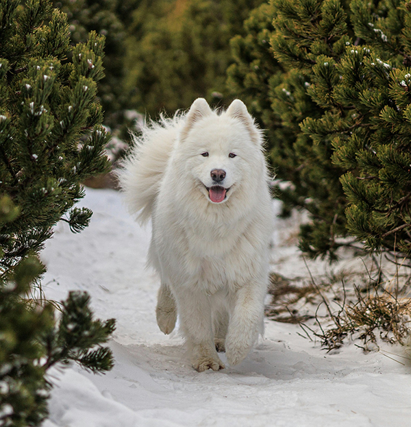

Life of a Samoyed
The Samoyed is a substantial but graceful dog standing anywhere from 19 to a bit over 23 inches at the shoulder. Powerful, tireless, with a thick all-white coat impervious to cold, Sammies are perfectly beautiful but highly functional. Even their most delightful feature, a perpetual smile, has a practical function: The upturned corners of the mouth keep Sammies from drooling, preventing icicles from forming on the face. A Sammy sentenced to solitary confinement in the yard is a miserable and destructive creature. These are smart, social, mischievous dogs who demand love and attention. Sammies need structure in training. Teach them what's expected of them early, and practice it with them often.